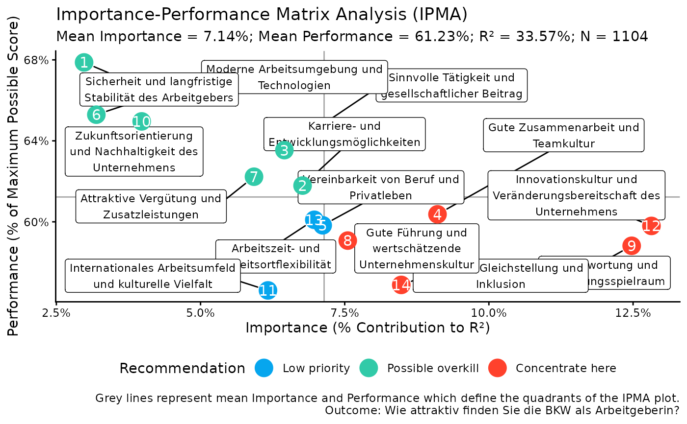

Create an Importance-Performance Matrix Analysis scatter plot
Source:R/kda.R
kda_ipma_scatterPlot.RdA short description...
Usage
kda_ipma_scatterPlot(
model,
ipma_obj,
show_labels = TRUE,
quadrant_colors = c(`Concentrate here` = yougov_colors[["Red 1"]],
`Keep up the good work` = yougov_colors[["Purple 1"]], `Possible overkill` =
yougov_colors[["Teal 1"]], `Low priority` = yougov_colors[["Blue 1"]]),
geom_point_size = 6
)Arguments
- model
A fitted model object.
- ipma_obj
An IPMA results object, i.e., the output from
kda_ipma().- show_labels
Optional. A logical indicating whether to display predictor labels on the plot. Defaults to
TRUE.- quadrant_colors
Optional. A named character vector of colors for the four quadrants. Defaults to a set of predefined colors.
- geom_point_size
Optional. A numeric value specifying the size of the points on the scatter plot. Defaults to 8.
Examples
# Fit a model
m <- lm(F600 ~ ., data = bkw_processed)
# Fit importance and performance objects
importance_obj <- kda_importance_jrw(m)
#> New names:
#> • `` -> `...1`
performance_obj <- kda_performance(m)
ipma_obj <- kda_ipma(importance_obj, performance_obj)
# Create IPMA scatter plot
ipma_plot <- kda_ipma_scatterPlot(m, ipma_obj)
# Access IPMA plot
print(ipma_plot$p)
